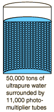

|  |
On November 12, 2001, the remarkable facility suffered a terrible accident in which a chain reaction of failures destroyed about 7,000 of the11,000 photomultiplier tubes. The tank was being refilled with water after some of its burned-out tubes had been replaced. The conclusion of the investigating teams was that workmen standing on styrofoam pads on top of some of the bottom photomultiplier tubes must have caused microfractures in the neck of one of the tubes, leading to an implosion of that tube. That implosion caused a chain reaction of implosions throughout the tank. This seems to be a case where Pascal's principle worked very much against them, transmitting the pressure pulse from the implosion to other tubes submerged in the water.
Currently under investigation are plans to house each of the tubes in protective casings of fiber-reinforced acrylic to prevent a recurrence of such an accident. Some 5200 tubes survived the accident, and there were about a thousand spares, so work was underway to redeploy those tubes. The full repair of the facility is projected at five years and $15 to $25 million.
|